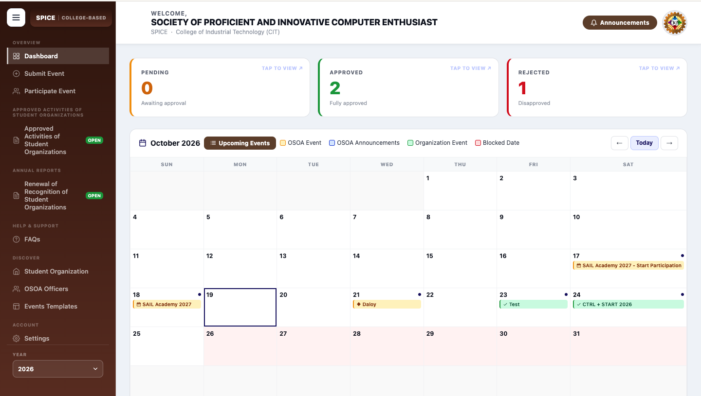

OSOA - Event & Activity Management System
Role: Lead Full-Stack Developer
A centralized web application engineered for Bulacan State University's Office of Student Organizations and Activities to automate event submissions, organization reviews, and automated notification workflows.